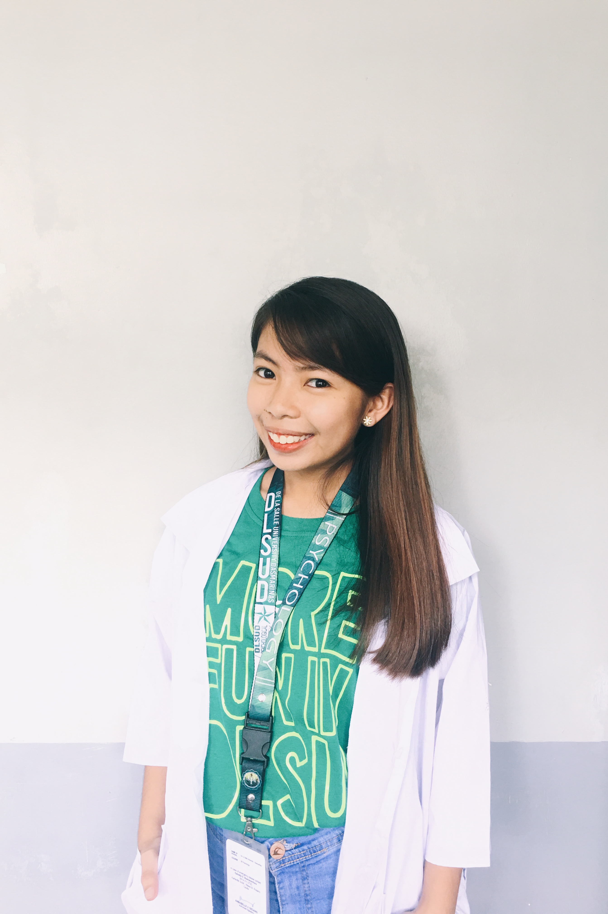

- qtPATootie Camera Roll
- Educational Background
- Get To Know My:
- Family
- Favorites
- Sheerio life ÷
- Connect With Me On:
-

-

-

Annyeong! ✌
I am usually called "Pat" or "Patring" by my friends and "Trisha" or "Pahuchay" by my family and relatives.
I just turned 18 last August 25 & I currently reside at Karlaville Subd., Wawa III, Rosario, Cavite. Furthermore, I'm a full-blooded
Nueva Ecijana. I am a member of The Church of Jesus Christ of Latter-day Saints (also known as Mormon ). ☺
I am just 4'11 and 45 kg. ((ppl consider it as a "cute size")). I am a fragile person, as in literally. Despite
of being fragile, I'm a risk-taker. I'm sometimes an extravert and sometimes an introvert. I talk a lot. I laugh a lot. I eat a lot. I enjoy life a lot! ♡
I am the "ATE", being the eldest of my two siblings.
I am a daughter of goodly parents.
I am a friend of many, not just in FB.
I am a Psychology major, not a Psychopath.
Also, I am a Lasallian and a book-lover.
Educational Background
Elementary
I had my Grade 1 to Grade 4 at Brilliant Montessori School in San Isidro, Nueva Ecija. I transfered into Cognoscere Academy in Rosario, Cavite during my 5th grade, there, I graduated my primary education last March 2011.
High School I graduated from Cavite State University-Rosario Campus last April 2015. I was a part of Science Education Laboratory Highschool. I had an opportunity to love sciences and mathematics back then
because our curriculum was composed of 8 science subjects and 7 math subjects.
College
I am currently taking up Bachelor of Science in Psychology at De La Salle University-Dasmarinas, under the Psychology Department of College of Liberal Arts and Communication. I so much love the field of behavioral sciences since I was in highschool. I took a premed (BS Psych) program because I have realized that I wanted to become a physician. My program has a retention policy and what makes me endure it is because I really enjoy studying human behaviors and mental processes!
copyright © 2018 Best Viewed In: Google Chrome Best Viewed In Screen Resolution: 1366 x 768